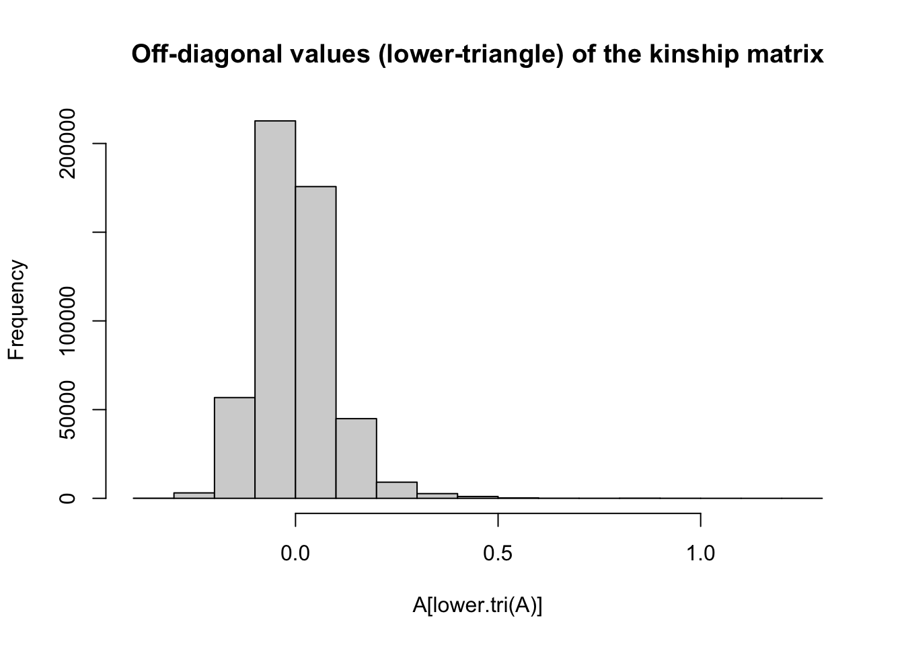
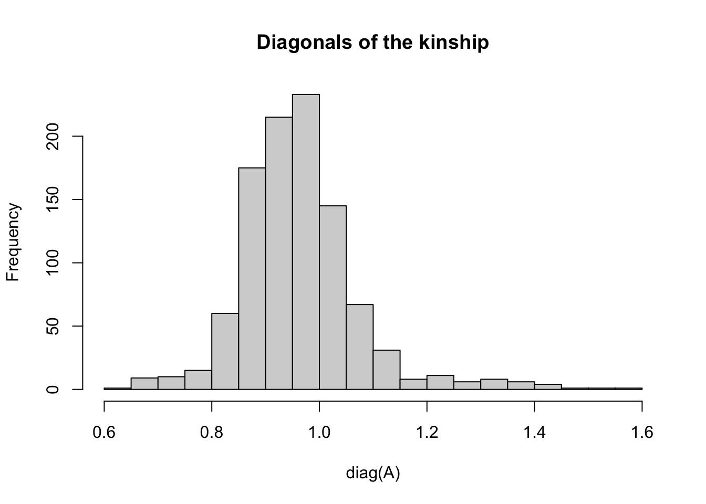
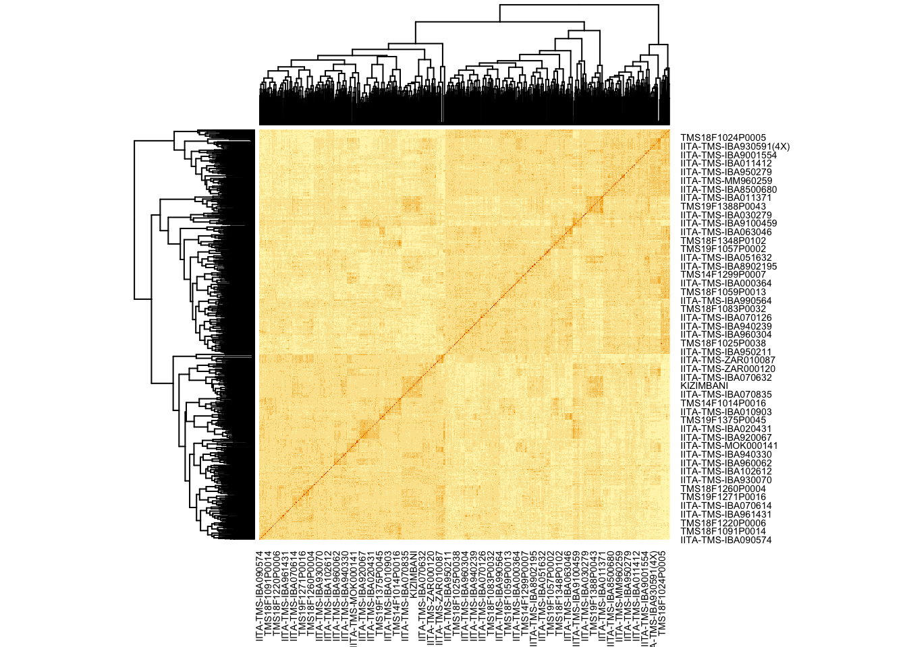
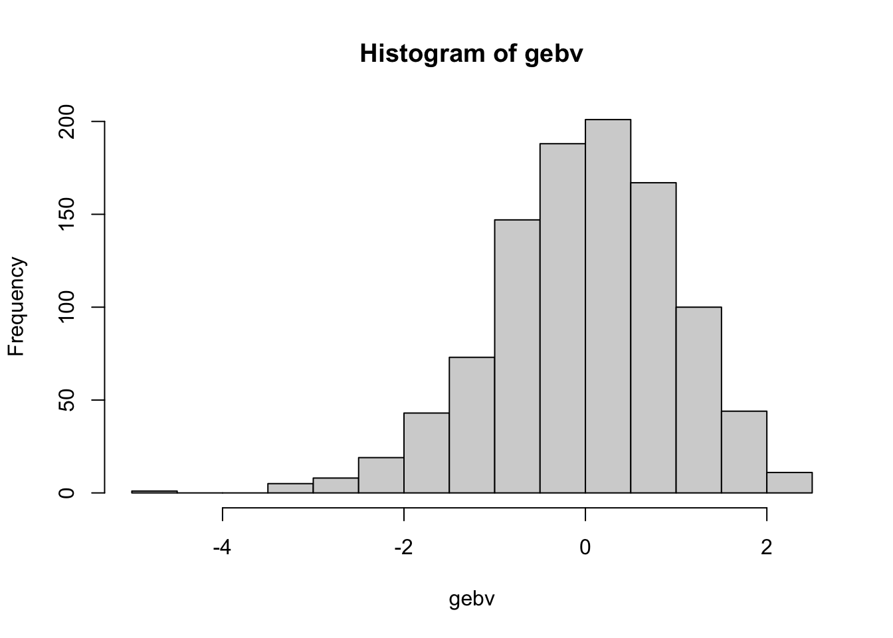
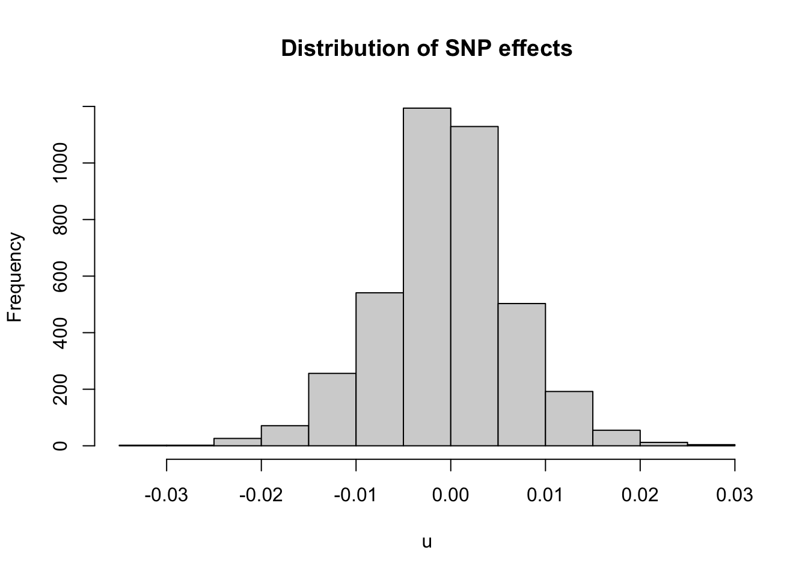
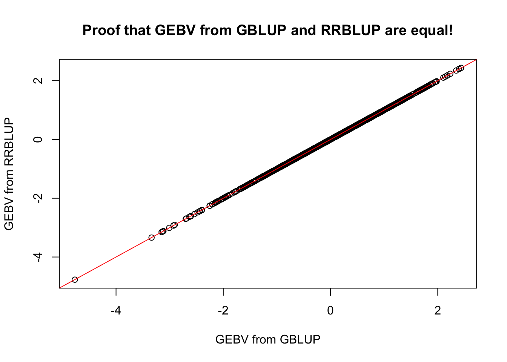

Last updated: 2022-04-26
Checks: 7 0
Knit directory: GSexample2022/
This reproducible R Markdown analysis was created with workflowr (version 1.7.0). The Checks tab describes the reproducibility checks that were applied when the results were created. The Past versions tab lists the development history.
Great! Since the R Markdown file has been committed to the Git repository, you know the exact version of the code that produced these results.
Great job! The global environment was empty. Objects defined in the global environment can affect the analysis in your R Markdown file in unknown ways. For reproduciblity it’s best to always run the code in an empty environment.
The command set.seed(20220320) was run prior to running the code in the R Markdown file. Setting a seed ensures that any results that rely on randomness, e.g. subsampling or permutations, are reproducible.
Great job! Recording the operating system, R version, and package versions is critical for reproducibility.
Nice! There were no cached chunks for this analysis, so you can be confident that you successfully produced the results during this run.
Great job! Using relative paths to the files within your workflowr project makes it easier to run your code on other machines.
Great! You are using Git for version control. Tracking code development and connecting the code version to the results is critical for reproducibility.
The results in this page were generated with repository version acd7ed5. See the Past versions tab to see a history of the changes made to the R Markdown and HTML files.
Note that you need to be careful to ensure that all relevant files for the analysis have been committed to Git prior to generating the results (you can use wflow_publish or wflow_git_commit). workflowr only checks the R Markdown file, but you know if there are other scripts or data files that it depends on. Below is the status of the Git repository when the results were generated:
Ignored files:
Ignored: .Rhistory
Ignored: .Rproj.user/
Untracked files:
Untracked: .DS_Store
Untracked: Icon
Untracked: analysis/.DS_Store
Untracked: analysis/Icon
Untracked: analysis/images/Icon
Untracked: analysis/images/paste-2F34C15B.png
Untracked: analysis/images/paste-AD7AEEAC.png
Untracked: analysis/images/paste-CB5D91AC.png
Untracked: analysis/troubleshooting.Rmd
Untracked: code/Icon
Untracked: data/.DS_Store
Untracked: data/BreedBaseGenotypesDownload.positions
Untracked: data/BreedBaseGenotypesDownload.vcf
Untracked: data/BreedBaseGenotypes_subset.hap.gz
Untracked: data/BreedBaseGenotypes_subset.positions
Untracked: data/BreedBaseGenotypes_subset.samples
Untracked: data/Icon
Untracked: data/metadata_cynthia.csv
Untracked: data/phenotype_cynthia.csv
Untracked: data/subset_unique_names_for_vcf.txt
Untracked: data/unique_names_for_vcf.txt
Untracked: data/vcf_colnames.txt
Untracked: out.log
Untracked: output/.DS_Store
Untracked: output/Icon
Untracked: output/models_compared.Rdata
Note that any generated files, e.g. HTML, png, CSS, etc., are not included in this status report because it is ok for generated content to have uncommitted changes.
These are the previous versions of the repository in which changes were made to the R Markdown (analysis/intro_gp.Rmd) and HTML (docs/intro_gp.html) files. If you’ve configured a remote Git repository (see ?wflow_git_remote), click on the hyperlinks in the table below to view the files as they were in that past version.
| File | Version | Author | Date | Message |
|---|---|---|---|---|
| Rmd | acd7ed5 | wolfemd | 2022-04-26 | Add ‘Intro to GP’ section. Update ‘Index’ page. Minor tweak to ‘Get BLUPs’ section. |
suppressMessages(library(tidyverse));
suppressMessages(library(genomicMateSelectR));
suppressMessages(library(sommer));A<-readRDS(file=here::here("output","kinship_add.rds"))dim(A)[1] 1007 1007hist(A[lower.tri(A)], main='Off-diagonal values (lower-triangle) of the kinship matrix') The off-diagonals express the genomic relatedness between different individuals in the dataset.
This formulation has a mean-value of zero, such that >0 kinship means “more than the average population level of relatedness” while <0 values mean “greater than average.”
hist(diag(A), main='Diagonals of the kinship', breaks=20) The diagonal values express the relatedness of each individual to itself, which should be interpreted as the level of inbreeding (homozygosity).
heatmap(A)
blups<-readRDS(here::here("output","blups.rds"))# pull out one trait (DM) BLUPs
dm_blups<-blups$blups[[1]]
dm_blups %>% head# A tibble: 6 × 6
germplasmName BLUP PEV REL drgBLUP WT
<chr> <dbl> <dbl> <dbl> <dbl> <dbl>
1 50395 -1.02 4.44 0.117 -8.65 0.177
2 95NA-00063 -0.0285 4.44 0.117 -0.243 0.177
3 ANKRA -0.760 4.44 0.117 -6.47 0.177
4 BAHKYEHEMAA 0.924 4.44 0.117 7.87 0.177
5 BANGWEULU 0.331 4.44 0.117 2.82 0.177
6 BOUNOUA_BLANC 1.02 4.44 0.117 8.68 0.177Now we have all we need to implement a GBLUP model using mmer().
One thing to note:
table(dm_blups$germplasmName %in% rownames(A))
FALSE TRUE
564 962 There are phenotyped-but-not-genotyped lines.
table(rownames(A) %in% dm_blups$germplasmName)
FALSE TRUE
45 962 There are also genotyped-but-not-phenotyped lines.
Phenotyped-but-not-genotyped lines need to be excluded from the analysis.
Genotyped-but-not-phenotyped lines, as discussed above are accepted and can be predicted!
dm_blups %<>%
filter(germplasmName %in% rownames(A))gblup_all<-mmer(fixed = drgBLUP~1,
# here we specify a random-effect for the "germplasmName" variable
# and supply the kinship matrix "A" as follows:
random = ~vs(germplasmName,Gu=A),
weights = WT,
data=dm_blups)Version out of date. Please update sommer to the newest version using:
install.packages('sommer') in a new session
Use the 'date.warning' argument to disable the warning message.Adding additional levels of Gu in the model matrix of 'germplasmName'
iteration LogLik wall cpu(sec) restrained
1 -356.471 6:52:30 3 0
2 -355.724 6:52:33 6 0
3 -355.405 6:52:35 8 0
4 -355.333 6:52:38 11 0
5 -355.327 6:52:41 14 0
6 -355.326 6:52:43 16 0Here’s how to get out the GEBV from the mmer() output:
gebv<-gblup_all$U$`u:germplasmName`$drgBLUP
# Notice the "germplasmName" and "drgBLUP" references in this call
## are specific to the analysis/dataset in question.
## See the sommer manual on CRAN. Things to notice:
length(gebv)[1] 1007Only 962 phenotyped lines.
1007 predicted GEBV.
summary(gebv) Min. 1st Qu. Median Mean 3rd Qu. Max.
-4.76399 -0.63157 0.05915 0.00000 0.68340 2.44024 GEBV are centered on zero.
hist(gebv)
Now we can move into a more potentially complicated arena: evaluating prediction accuracy.
There are many scenarios and styles for doing this.
Let’s start super simple.
Of the phenotyped lines, I randomly sample approx. 1/5 (20%).
set.seed(1212)
test_set<-sample(dm_blups$germplasmName,size = ceiling(346/5), replace = F)Remove the lines chosen (test_set) from the training dataset:
training_blups<-dm_blups %>%
filter(!germplasmName %in% test_set)Fit the prediction model:
gblup_train<-mmer(fixed = drgBLUP~1,
# here we specify a random-effect for the "germplasmName" variable
# and supply the kinship matrix "A" as follows:
random = ~vs(germplasmName,Gu=A),
weights = WT,
data=training_blups)Version out of date. Please update sommer to the newest version using:
install.packages('sommer') in a new session
Use the 'date.warning' argument to disable the warning message.Adding additional levels of Gu in the model matrix of 'germplasmName'
iteration LogLik wall cpu(sec) restrained
1 -337.163 6:52:49 2 0
2 -336.308 6:52:51 4 0
3 -335.959 6:52:53 6 0
4 -335.885 6:52:55 8 0
5 -335.879 6:52:57 10 0
6 -335.878 6:52:59 12 0Now we can compare (correlate) the GEBV predicted for the held-out test_set lines to the BLUPs for those lines.
This is considered an estimate of “prediction accuracy”.
# grab the gebv only for the test_set lines
gebv_test<-gblup_train$U$`u:germplasmName`$drgBLUP[test_set]
# merge the original BLUPs (for the test set only) to the corresponding GEBV
# I use a left_join() or merge() to be absolutely sure there are no mix-ups
gebv_vs_blups_testset<-dm_blups %>%
filter(germplasmName %in% test_set) %>%
left_join(tibble(germplasmName=names(gebv_test),GEBV=as.numeric(gebv_test)))Joining, by = "germplasmName"Correlate the GEBV with the BLUP for the test_set.
gebv_vs_blups_testset %$% cor(BLUP,GEBV)[1] 0.1750126This correlation represents an estimate of accuracy predicting lines that aren’t phenotyped, based only on their genetic relatedness and the phenotypes of their relatives.
Sure, this is a low values. But it’s a small dataset using a small sample of markers to make compute fast for example purposes.
Cross-validation functions get complicated quickly as they have loops within loops.
I built a function runCrossVal() that fits several different models, handles multiple traits, can run in-parallel across mutiple compute-cores and even accepts selection index weights to compute selection index accuracy. runCrossVal() is included in the genomicMateSelectR package.
Below, I use it on only 1 trait, additive-only model.
NOTES: - doesn’t work properly unless gid="GID". - It also requires you to remove any phenotyped lines that aren’t genotyped.
Following chunk does both of those:
blups_forRunCrossValFunc<-blups %>%
# just one trait
slice(1) %>%
# need to rename the "blups" list to comply with the runCrossVal function
rename(TrainingData=blups) %>%
dplyr::select(Trait,TrainingData) %>%
# need also to remove phenotyped-but-not-genotyped lines
# couldn't hurt to also subset the kinship to only phenotyped lines... would save RAM
mutate(TrainingData=map(TrainingData,
~filter(.,germplasmName %in% rownames(A)) %>%
# rename the germplasmName column to GID
rename(GID=germplasmName)))standardCV<-runCrossVal(blups=blups_forRunCrossValFunc,
modelType="A",
selInd=FALSE,
grms=list(A=A),
nrepeats=2,nfolds=5,
gid="GID",seed=424242,
ncores=5)Loading required package: rsampleLoading required package: furrrLoading required package: futureiteration LogLik wall cpu(sec) restrained
1 -282.488 6:53:6 2 0
2 -281.563 6:53:8 4 0
3 -281.236 6:53:9 5 0
4 -281.183 6:53:11 7 0
5 -281.18 6:53:12 8 0
6 -281.18 6:53:14 10 0
[1] "GBLUP model complete - one trait"
[1] "Genomic predictions done for all traits in one repeat-fold"
iteration LogLik wall cpu(sec) restrained
1 -278.563 6:53:18 2 0
2 -277.344 6:53:20 4 0
3 -276.812 6:53:21 5 0
4 -276.682 6:53:23 7 0
5 -276.668 6:53:24 8 0
6 -276.666 6:53:26 10 0
7 -276.666 6:53:27 11 0
[1] "GBLUP model complete - one trait"
[1] "Genomic predictions done for all traits in one repeat-fold"Joining, by = "GID"Joining, by = "GID"iteration LogLik wall cpu(sec) restrained
1 -284.947 6:53:7 2 0
2 -283.172 6:53:8 3 0
3 -282.401 6:53:10 5 0
4 -282.225 6:53:11 6 0
5 -282.21 6:53:13 8 0
6 -282.209 6:53:15 10 0
7 -282.209 6:53:17 12 0
[1] "GBLUP model complete - one trait"
[1] "Genomic predictions done for all traits in one repeat-fold"
iteration LogLik wall cpu(sec) restrained
1 -285.414 6:53:20 2 0
2 -285.212 6:53:22 4 0
3 -285.127 6:53:24 6 0
4 -285.109 6:53:25 7 0
5 -285.108 6:53:27 9 0
6 -285.108 6:53:28 10 0
[1] "GBLUP model complete - one trait"
[1] "Genomic predictions done for all traits in one repeat-fold"Joining, by = "GID"
Joining, by = "GID"iteration LogLik wall cpu(sec) restrained
1 -293.434 6:53:7 2 0
2 -292.797 6:53:9 4 0
3 -292.531 6:53:10 5 0
4 -292.475 6:53:12 7 0
5 -292.471 6:53:14 9 0
6 -292.47 6:53:16 11 0
[1] "GBLUP model complete - one trait"
[1] "Genomic predictions done for all traits in one repeat-fold"
iteration LogLik wall cpu(sec) restrained
1 -299.215 6:53:19 2 0
2 -298.959 6:53:21 4 0
3 -298.843 6:53:22 5 0
4 -298.815 6:53:24 7 0
5 -298.812 6:53:26 9 0
6 -298.811 6:53:27 10 0
[1] "GBLUP model complete - one trait"
[1] "Genomic predictions done for all traits in one repeat-fold"Joining, by = "GID"
Joining, by = "GID"iteration LogLik wall cpu(sec) restrained
1 -270.158 6:53:8 2 0
2 -270.127 6:53:9 3 0
3 -270.114 6:53:11 5 0
4 -270.111 6:53:13 7 0
5 -270.111 6:53:14 8 0
[1] "GBLUP model complete - one trait"
[1] "Genomic predictions done for all traits in one repeat-fold"
iteration LogLik wall cpu(sec) restrained
1 -280.573 6:53:18 2 0
2 -278.518 6:53:20 4 0
3 -277.652 6:53:21 5 0
4 -277.453 6:53:23 7 0
5 -277.435 6:53:25 9 0
6 -277.433 6:53:26 10 0
7 -277.433 6:53:28 12 0
[1] "GBLUP model complete - one trait"
[1] "Genomic predictions done for all traits in one repeat-fold"Joining, by = "GID"
Joining, by = "GID"iteration LogLik wall cpu(sec) restrained
1 -288.833 6:53:8 2 0
2 -287.363 6:53:10 4 0
3 -286.82 6:53:12 6 0
4 -286.726 6:53:13 7 0
5 -286.721 6:53:15 9 0
6 -286.721 6:53:17 11 0
[1] "GBLUP model complete - one trait"
[1] "Genomic predictions done for all traits in one repeat-fold"
iteration LogLik wall cpu(sec) restrained
1 -287.812 6:53:20 2 0
2 -286.737 6:53:22 4 0
3 -286.284 6:53:24 6 0
4 -286.189 6:53:25 7 0
5 -286.182 6:53:27 9 0
6 -286.181 6:53:28 10 0
[1] "GBLUP model complete - one trait"
[1] "Genomic predictions done for all traits in one repeat-fold"Joining, by = "GID"
Joining, by = "GID"standardCV %>% unnest(accuracyEstOut) # A tibble: 10 × 9
repeats seeds splits id Trait predOf predVSobs Accuracy NcompleteTestPa…
<int> <int> <list> <chr> <chr> <chr> <list> <dbl> <dbl>
1 1 395601 <split… Fold1 DM GEBV <tibble … 0.0983 1
2 1 395601 <split… Fold2 DM GEBV <tibble … 0.0437 1
3 1 395601 <split… Fold3 DM GEBV <tibble … 0.0905 1
4 1 395601 <split… Fold4 DM GEBV <tibble … 0.222 1
5 1 395601 <split… Fold5 DM GEBV <tibble … 0.144 1
6 2 215870 <split… Fold1 DM GEBV <tibble … 0.275 1
7 2 215870 <split… Fold2 DM GEBV <tibble … 0.196 1
8 2 215870 <split… Fold3 DM GEBV <tibble … 0.000840 1
9 2 215870 <split… Fold4 DM GEBV <tibble … 0.126 1
10 2 215870 <split… Fold5 DM GEBV <tibble … 0.139 1standardCV %>%
unnest(accuracyEstOut) %$% summary(Accuracy) Min. 1st Qu. Median Mean 3rd Qu. Max.
0.00084 0.09243 0.13274 0.13366 0.18305 0.27524 AKA SNP-BLUP.
Let’s see how to fit with mmer().
Also demo the equivalency of RRBLUP and GBLUP.
# load the dosage matrix
M<-readRDS(file=here::here("data","dosages.rds"))
# re-load and extract the blups for just 1 trait
blups<-readRDS(file=here::here("output","blups.rds"))
dm_blups<-blups$blups[[1]]
# remove phenotyped-but-not-genoypted blups
dm_blups %<>%
filter(germplasmName %in% rownames(M))
# remove genotyped-but-not-phenoypted (not strictly necessary)
M<-M[rownames(M) %in% dm_blups$germplasmName,]
# Create a kinship matrix "K"
K<-kinship(M,"add")
# Now create a centered dosage matrix, to use as predictors for rr-BLUP
Z<-centerDosage(M)Fit the GBLUP model
gblup<-mmer(fixed = drgBLUP~1,
random = ~vs(germplasmName,Gu = K),
weights = WT,
data=dm_blups)Version out of date. Please update sommer to the newest version using:
install.packages('sommer') in a new session
Use the 'date.warning' argument to disable the warning message.iteration LogLik wall cpu(sec) restrained
1 -356.474 6:53:35 3 0
2 -355.725 6:53:38 6 0
3 -355.405 6:53:41 9 0
4 -355.333 6:53:43 11 0
5 -355.327 6:53:46 14 0
6 -355.326 6:53:49 17 0# extract the G-BLUPs (GEBVs)
g<-gblup$U$`u:germplasmName`$drgBLUP
all(names(g) %in% rownames(Z))[1] TRUENow fit the RRBLUP model
# one catch
# the rows of the centered dosage matrix must be matched
## to the rows of data.frame with the blups
## one way to do this is by creating and incidence matrix
## use the model.matrix() function as follows:
ZincMat=model.matrix(~factor(germplasmName,levels=rownames(Z))-1,data=dm_blups) # -1 because we don't want an intercept here
dim(ZincMat) # [1] 346 346 [1] 962 962# relates the rows of the BLUPs to the rows the marker matrix
# now fit the RRBLUP model
rrblup<-mmer(fixed = drgBLUP~1,
random = ~vs(list(ZincMat%*%Z),buildGu = FALSE),
weights = WT,
data=dm_blups)Version out of date. Please update sommer to the newest version using:
install.packages('sommer') in a new session
Use the 'date.warning' argument to disable the warning message.iteration LogLik wall cpu(sec) restrained
1 -835.075 6:54:11 18 0
2 -610.966 6:54:14 21 0
3 -438.994 6:54:17 24 0
4 -362.751 6:54:20 27 0
5 -355.985 6:54:22 29 0
6 -355.386 6:54:25 32 0
7 -355.332 6:54:27 34 0
8 -355.327 6:54:30 37 0
9 -355.326 6:54:32 39 0Extract the SNP-BLUPs
# extract the SNP-BLUPs
u<-as.matrix(rrblup$U$`u:Z`$drgBLUP)
all(rownames(u)==colnames(Z))[1] TRUEsummary(u) V1
Min. :-0.0311133
1st Qu.:-0.0043459
Median :-0.0003939
Mean :-0.0004874
3rd Qu.: 0.0036510
Max. : 0.0288460 hist(u,breaks=20,main = 'Distribution of SNP effects')
Calculate the GEBVs using the SNP-effects (SNP-BLUPs)
# calculate the GEBVs using the SNP-effects (SNP-BLUPs)
g_rr<-Z[names(g),]%*%u
all(rownames(g_rr)==names(g))[1] TRUEg_rr[1:5,] 50395 95NA-00063 BAHKYEHEMAA BOUNOUA_BLANC CH92108
-0.6734370 0.7155646 2.2350879 1.5461074 1.2510628 g[1:5] 50395 95NA-00063 BAHKYEHEMAA BOUNOUA_BLANC CH92108
-0.6725989 0.7151010 2.2330024 1.5445541 1.2497041 # cor(g,g_rr) # [1,] 0.9999997
plot(x=g,y=g_rr,
main = 'Proof that GEBV from GBLUP and RRBLUP are equal!',
xlab="GEBV from GBLUP", ylab="GEBV from RRBLUP");
abline(a=0,b=1,col='red')
The Genomic Selection Manual, Chapter 10 has lot’s of “Recommended Literature” at the bottom of the section!
sessionInfo()R version 4.1.1 (2021-08-10)
Platform: x86_64-apple-darwin17.0 (64-bit)
Running under: macOS Big Sur 10.16
Matrix products: default
BLAS: /Library/Frameworks/R.framework/Versions/4.1/Resources/lib/libRblas.0.dylib
LAPACK: /Library/Frameworks/R.framework/Versions/4.1/Resources/lib/libRlapack.dylib
locale:
[1] en_US.UTF-8/en_US.UTF-8/en_US.UTF-8/C/en_US.UTF-8/en_US.UTF-8
attached base packages:
[1] stats graphics grDevices utils datasets methods base
other attached packages:
[1] furrr_0.2.3 future_1.23.0 rsample_0.1.1
[4] sommer_4.1.5 crayon_1.4.2 lattice_0.20-45
[7] MASS_7.3-54 Matrix_1.4-0 genomicMateSelectR_0.2.0
[10] forcats_0.5.1 stringr_1.4.0 dplyr_1.0.7
[13] purrr_0.3.4 readr_2.1.1 tidyr_1.1.4
[16] tibble_3.1.6 ggplot2_3.3.5 tidyverse_1.3.1
[19] workflowr_1.7.0
loaded via a namespace (and not attached):
[1] httr_1.4.2 sass_0.4.0 jsonlite_1.7.2 here_1.0.1
[5] modelr_0.1.8 bslib_0.3.1 assertthat_0.2.1 getPass_0.2-2
[9] highr_0.9 cellranger_1.1.0 yaml_2.2.1 globals_0.14.0
[13] pillar_1.6.4 backports_1.4.1 glue_1.6.0 digest_0.6.29
[17] promises_1.2.0.1 rvest_1.0.2 colorspace_2.0-2 htmltools_0.5.2
[21] httpuv_1.6.5 pkgconfig_2.0.3 broom_0.7.11 listenv_0.8.0
[25] haven_2.4.3 scales_1.1.1 processx_3.5.2 whisker_0.4
[29] later_1.3.0 tzdb_0.2.0 git2r_0.29.0 generics_0.1.1
[33] ellipsis_0.3.2 withr_2.4.3 cli_3.1.0 magrittr_2.0.1
[37] readxl_1.3.1 evaluate_0.14 ps_1.6.0 parallelly_1.30.0
[41] fs_1.5.2 fansi_0.5.0 xml2_1.3.3 tools_4.1.1
[45] hms_1.1.1 lifecycle_1.0.1 munsell_0.5.0 reprex_2.0.1
[49] callr_3.7.0 compiler_4.1.1 jquerylib_0.1.4 rlang_0.4.12
[53] grid_4.1.1 rstudioapi_0.13 rmarkdown_2.11 codetools_0.2-18
[57] gtable_0.3.0 DBI_1.1.2 R6_2.5.1 lubridate_1.8.0
[61] knitr_1.37 fastmap_1.1.0 utf8_1.2.2 rprojroot_2.0.2
[65] stringi_1.7.6 parallel_4.1.1 Rcpp_1.0.7 vctrs_0.3.8
[69] dbplyr_2.1.1 tidyselect_1.1.1 xfun_0.29